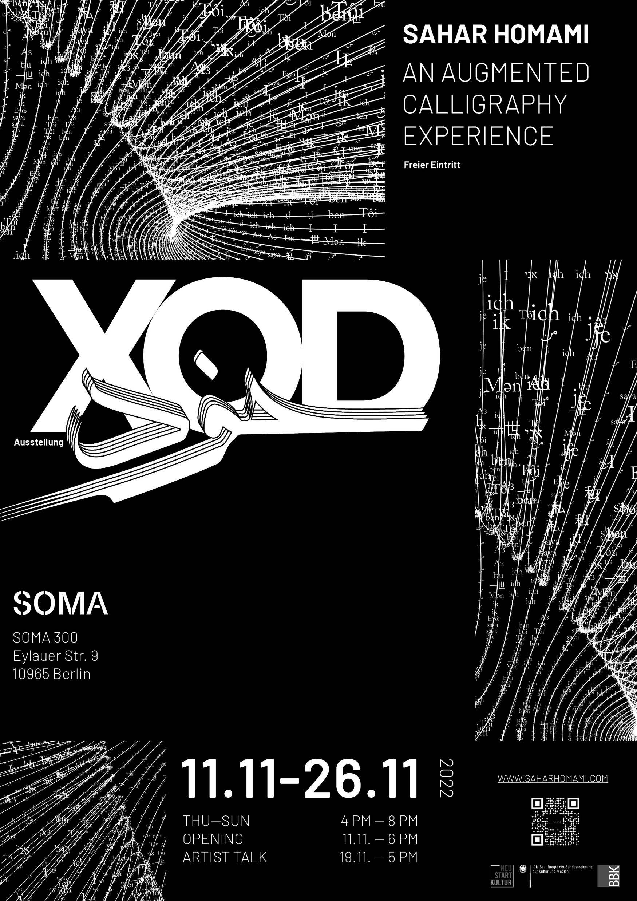

11.11 - 26.11.2022
thu - sun 4 - 8 p.m.
SOMA 300
thu - sun 4 - 8 p.m.
SOMA 300
OPENING 11.11.2022, 6 p.m.
Sahar Homami
XOD
XOD

DE
Die Mystiker postulieren, dass Erkenntnis immer zugleich einen Selbstverlust (fana) bedeutet, der die Möglichkeit eröffnet, ein Selbst in Einheit mit dem Absoluten zu realisieren. Parallel dazu ähneln sich die persischen Worte für Selbst (خود, xod) und Gott (خدا, xoda). Diese Bezüge greift Homami in xiesen Arbeiten auf und bietet so eine transkulturelle und säkulare Sicht auf spirituelles Streben und asketische Tradition, wie es auch in der Suche nach Atman, dem essentiellen Selbst im Hinduismus, Ausdruck findet. Die ausgestellten Werke evozieren modifizierte Formen traditioneller Meditationspraktiken. Insbesondere der einleitende Besinnungsraum fungiert als Dhyana Bustan (Garten der Kontemplation) und ruft damit global-kunsthistorische Modelle der kontemplativen Naturbetrachtung, von der symmetrisch-geometrischen Struktur antiker persischer Gärten bis hin zu Landschaftsmalerei der Song-Dynastie, auf.
Nach einem sanften Onboarding mit meditativem Licht- und Sounddesign im Besinnungsraum werden die Besucher*innen eingeladen, sich auf eine immersive Reise der Selbstverwirklichung zu begeben. Diese Reise entfaltet sich durch eine Abfolge digital erweiterter Kalligrafie-Stücke, die ihre virtuellen Animationen durch einfaches Scannen des Kunstwerks mit einem Smartphone enthüllen.
In der aufsteigenden Spirale der Evolution nimmt jede neue Generation die Erfahrungen der vorherigen Stufe auf und baut sie aus. So wird die Kunst der Kalligrafie weitergegeben, vom Meister zum Schüler, der dann zum nächsten Meister wird. Hierfür war die Kalligrafie ursprünglich gedacht: Geschichte und Weisheit festzuhalten, um sie mit der nächsten Generation zu teilen. Homamis Arbeiten dienen als Brücke zwischen der traditionellen Kunstform und unseren neuen Technologien und verbindet so die Vergangenheit mit der Gegenwart.
Sahar Homami arbeitet audiovisuell-künstlerisch, programmierend, kalligrafisch und forschend. Homami widmet sich der Erforschung veränderter Bewusstseinszustände durch Musik und Bild. Xier strebt danach, die Grenzen der Wahrnehmung und des Bewusstseins zu verschieben, um unsere Kunst des Sehens, die Wissen, Kunst, Ethos und Politik umfasst, zu erweitern. Homamis künstlerische Praxis ist stark von klassischer persischer Literatur und mystischen Gedankensystemen beeinflusst.
Die Mystiker postulieren, dass Erkenntnis immer zugleich einen Selbstverlust (fana) bedeutet, der die Möglichkeit eröffnet, ein Selbst in Einheit mit dem Absoluten zu realisieren. Parallel dazu ähneln sich die persischen Worte für Selbst (خود, xod) und Gott (خدا, xoda). Diese Bezüge greift Homami in xiesen Arbeiten auf und bietet so eine transkulturelle und säkulare Sicht auf spirituelles Streben und asketische Tradition, wie es auch in der Suche nach Atman, dem essentiellen Selbst im Hinduismus, Ausdruck findet. Die ausgestellten Werke evozieren modifizierte Formen traditioneller Meditationspraktiken. Insbesondere der einleitende Besinnungsraum fungiert als Dhyana Bustan (Garten der Kontemplation) und ruft damit global-kunsthistorische Modelle der kontemplativen Naturbetrachtung, von der symmetrisch-geometrischen Struktur antiker persischer Gärten bis hin zu Landschaftsmalerei der Song-Dynastie, auf.
Nach einem sanften Onboarding mit meditativem Licht- und Sounddesign im Besinnungsraum werden die Besucher*innen eingeladen, sich auf eine immersive Reise der Selbstverwirklichung zu begeben. Diese Reise entfaltet sich durch eine Abfolge digital erweiterter Kalligrafie-Stücke, die ihre virtuellen Animationen durch einfaches Scannen des Kunstwerks mit einem Smartphone enthüllen.
In der aufsteigenden Spirale der Evolution nimmt jede neue Generation die Erfahrungen der vorherigen Stufe auf und baut sie aus. So wird die Kunst der Kalligrafie weitergegeben, vom Meister zum Schüler, der dann zum nächsten Meister wird. Hierfür war die Kalligrafie ursprünglich gedacht: Geschichte und Weisheit festzuhalten, um sie mit der nächsten Generation zu teilen. Homamis Arbeiten dienen als Brücke zwischen der traditionellen Kunstform und unseren neuen Technologien und verbindet so die Vergangenheit mit der Gegenwart.
Sahar Homami arbeitet audiovisuell-künstlerisch, programmierend, kalligrafisch und forschend. Homami widmet sich der Erforschung veränderter Bewusstseinszustände durch Musik und Bild. Xier strebt danach, die Grenzen der Wahrnehmung und des Bewusstseins zu verschieben, um unsere Kunst des Sehens, die Wissen, Kunst, Ethos und Politik umfasst, zu erweitern. Homamis künstlerische Praxis ist stark von klassischer persischer Literatur und mystischen Gedankensystemen beeinflusst.
EN
Mystical thought systems postulate that acquiring awareness entails a concurrent loss of self (fana), which opens up the possibility of realising a Self in unity with the Absolute. This is paralleled by the similarity of the Persian words for self (خود, xod) and God (خدا, xoda). Homami takes up these references in their works, offering a transcultural and secular view of spiritual pursuit and ascetic tradition, as is also expressed in the search for Atman, the essential self in Hinduism. The works on display evoke modified forms of traditional meditation practices. In particular, the introductory space functions as a Dhyana Bustan (Garden of Contemplation), recalling global art historical models of nature contemplation, from the symmetrical geometric structure of ancient Persian gardens to landscape painting of the Song Dynasty.
After this soft onboarding, with meditative light and sound design in a calm and tranquil space, the visitors are invited to embark on an immersive journey of self-realization. This journey unfolds in a succession of augmented calligraphy pieces, which reveal their virtual animations through a simple scanning of the artwork with a smartphone.
In the ascending spiral of evolution, each new generation absorbs the experiences of the previous level and expands upon them. That’s how the art of calligraphy has been passed down – from master to student, who then becomes the next master - and also what calligraphy was originally intended for: recording history and wisdom to be shared with the next generation. Homami’s work serves as a bridge between this traditional art form and our new technologies, connecting the past to the present.
Sahar Homami is an audiovisual artist/programmer, calligrapher and researcher. Homami is invested in exploring altered states of consciousness through music and image. They strive to push the boundaries of perception and consciousness to expand our art of seeing, which spans knowledge, art, ethos and politics. Homami’s art practice is deeply influenced by classical Persian literature and mystical thought-systems.
Mystical thought systems postulate that acquiring awareness entails a concurrent loss of self (fana), which opens up the possibility of realising a Self in unity with the Absolute. This is paralleled by the similarity of the Persian words for self (خود, xod) and God (خدا, xoda). Homami takes up these references in their works, offering a transcultural and secular view of spiritual pursuit and ascetic tradition, as is also expressed in the search for Atman, the essential self in Hinduism. The works on display evoke modified forms of traditional meditation practices. In particular, the introductory space functions as a Dhyana Bustan (Garden of Contemplation), recalling global art historical models of nature contemplation, from the symmetrical geometric structure of ancient Persian gardens to landscape painting of the Song Dynasty.
After this soft onboarding, with meditative light and sound design in a calm and tranquil space, the visitors are invited to embark on an immersive journey of self-realization. This journey unfolds in a succession of augmented calligraphy pieces, which reveal their virtual animations through a simple scanning of the artwork with a smartphone.
In the ascending spiral of evolution, each new generation absorbs the experiences of the previous level and expands upon them. That’s how the art of calligraphy has been passed down – from master to student, who then becomes the next master - and also what calligraphy was originally intended for: recording history and wisdom to be shared with the next generation. Homami’s work serves as a bridge between this traditional art form and our new technologies, connecting the past to the present.
Sahar Homami is an audiovisual artist/programmer, calligrapher and researcher. Homami is invested in exploring altered states of consciousness through music and image. They strive to push the boundaries of perception and consciousness to expand our art of seeing, which spans knowledge, art, ethos and politics. Homami’s art practice is deeply influenced by classical Persian literature and mystical thought-systems.